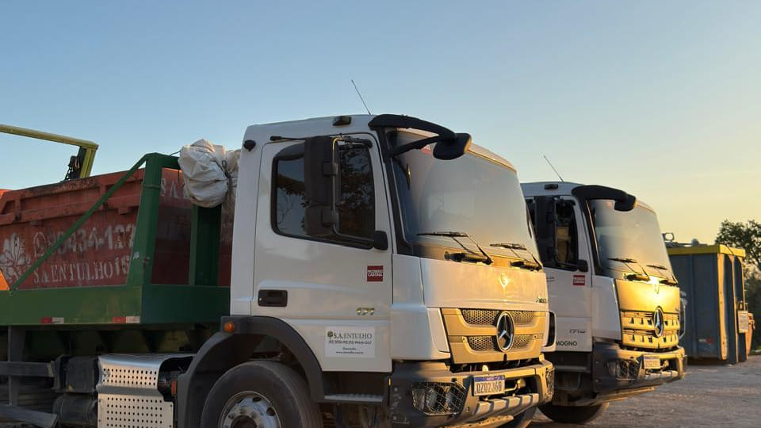

Coleta de entulho
Locação de caixa de entulho para resíduos de construção, reforma e demolição. Você solicita, nós entregamos e retiramos após o uso.
Solicitar caixaManaus · Amazonas
Coleta, transporte e destinação adequada de resíduos de construção civil e materiais recicláveis, com segurança, agilidade e responsabilidade ambiental em Manaus.

O que fazemos
Coleta, transporte e destinação adequada para obras, empresas, condomínios e residências em Manaus.
Locação de caixa de entulho para resíduos de construção, reforma e demolição. Você solicita, nós entregamos e retiramos após o uso.
Solicitar caixaColeta prática para locais com acesso restrito, como garagens, ruas estreitas e áreas onde caminhões maiores não conseguem operar.
Solicitar coletaColeta e transporte de materiais recicláveis, com encaminhamento para destinação adequada e foco no reaproveitamento.
Falar com nossa equipeSucção, limpeza e transporte de efluentes, com atendimento para residências, condomínios e empresas.
Solicitar atendimentoLocação de banheiro químico para obra, canteiro e evento, com entrega, higienização e retirada no prazo combinado.
Solicitar banheiroDesentupimento de pia, ralo, vaso e caixa de gordura, com equipamento próprio, em residência, condomínio e empresa.
Solicitar desentupimentoComo funciona
A caixa de entulho fica no local pelo período contratado, de 1 a 4 dias, conforme a opção escolhida pelo cliente. Durante esse prazo, você coloca o material na caixa e, ao final do período contratado, realizamos a retirada e encaminhamos os resíduos para a destinação adequada.
Entre em contato pelo WhatsApp ou telefone, informe o endereço, o tipo de resíduo e o período necessário.
Entregamos a caixa de entulho no local combinado, posicionada em local adequado para utilização.
O cliente é responsável por colocar os resíduos dentro da caixa. A S.A. Entulho não disponibiliza mão de obra para o carregamento do material.
Quando finalizar o uso, solicite a retirada. Nossa equipe recolhe a caixa de entulho e encaminha os resíduos para a destinação adequada.
A empresa
A S.A. Entulho atua na coleta, transporte e destinação adequada de resíduos da construção civil e materiais recicláveis em Manaus.
Trabalhamos com licenciamento ambiental, equipe capacitada e veículos adequados para cada operação, garantindo segurança e responsabilidade em todas as etapas do serviço.
Mais do que retirar o resíduo, nosso compromisso é garantir que ele seja encaminhado para uma destinação ambientalmente adequada, com a documentação necessária para assegurar sua rastreabilidade.
Missão e valores
Prestar serviços completos e responsáveis para a gestão de resíduos, desde a coleta até a destinação final ambientalmente adequada, com segurança, conformidade legal, rastreabilidade, agilidade e qualidade.
Atender às necessidades de cada cliente por meio de operações eficientes, legalmente conformes e sustentáveis, com melhoria contínua dos processos, proteção do meio ambiente e segurança das pessoas em todas as nossas atividades.
Nossos valores
A segurança das pessoas vem antes de tudo: equipe treinada, equipamento adequado e procedimentos seguros em todas as nossas atividades.
Cumprimos a legislação e os requisitos aplicáveis ao nosso negócio.
Destinação ambientalmente adequada dos resíduos, com documentação que comprova para onde cada carga foi.
Processos, serviços e equipamentos sempre mais eficientes, seguros e de qualidade.
Colaboradores, fornecedores e parceiros em um ambiente seguro, respeitoso e com oportunidades.
Atendimento ágil, comunicação transparente e soluções confiáveis.
Práticas sustentáveis e economia circular, contribuindo para a preservação dos recursos naturais.
Ética, transparência e responsabilidade em todas as nossas relações e operações.
Perguntas frequentes
As dúvidas que mais chegam ao nosso atendimento, respondidas aqui.
Nossa caixa de entulho padrão possui capacidade de 5 m³.
A locação padrão considera um período de 1 a 4 dias, conforme as condições comerciais informadas no momento da contratação.
Sim. A caixa pode ficar estacionada em local onde seja permitido estacionar carro, desde que não bloqueie acessos, garagens, portões ou prejudique a circulação e a segurança no local.
Não. O tipo de resíduo deve ser informado no momento do orçamento, pois alguns materiais possuem regras específicas de transporte, acondicionamento e destinação.
Atendemos Manaus, Iranduba e Manacapuru.
O atendimento depende do tipo de serviço, localização e disponibilidade logística. Para alguns serviços fora de Manaus, nossa equipe realiza uma análise prévia da operação e apresenta as condições comerciais correspondentes.
Entre em contato com nossa equipe por WhatsApp ou telefone e informe:
São 120 respostas sobre caixa, roll-on, fossa, banheiro químico, documentação ambiental e orçamento.

Contato
Solicite seu orçamento pelo WhatsApp. Informe o endereço, o tipo de resíduo e o serviço que precisa. Nossa equipe orienta você e passa as condições para o atendimento.